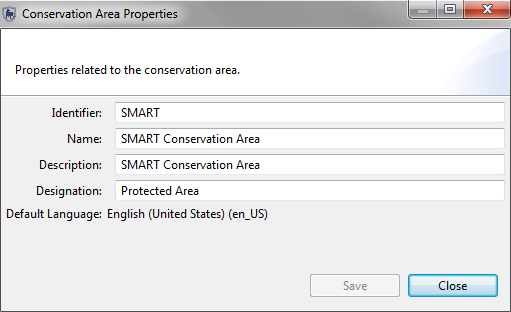
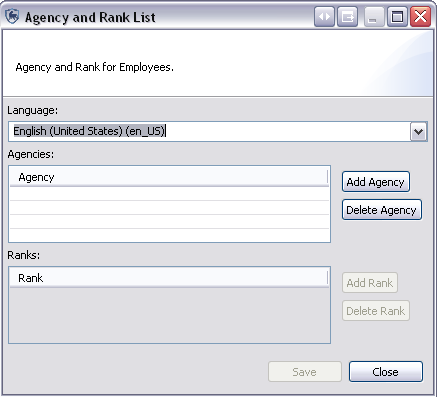
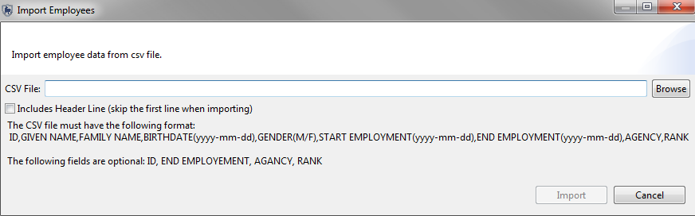
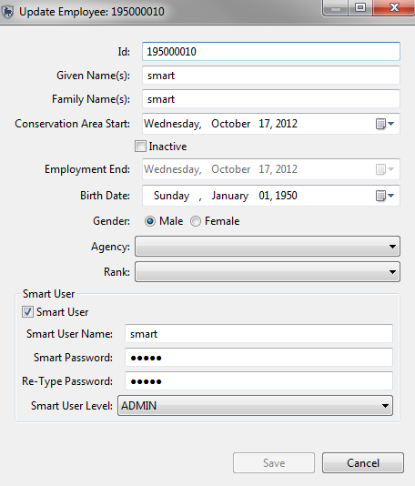
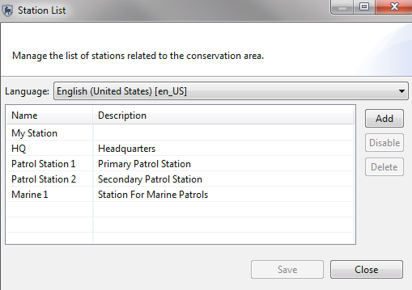
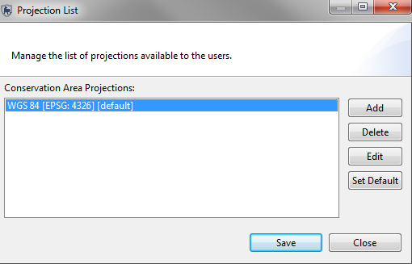

Después de la instalación inicial del software SMART, tendrá que establecer una nueva área de conservación que involucra una serie de elementos de configuración.
Crear una nueva área de conservación se hace a través del enlace "avanzado ..." en la pantalla de arranque inicial.
Pantalla de arranque inicial
Opciones avanzadas de SMART

Las Propiedades del Área de Conservación son los nombres y descriptores asignados a un Área de Conservación específica. Estas propiedades pueden ayudar a los usuarios del software SMART a manejar múltiples áreas de conservación.

La creación de una cuenta para el administrador principal de una nueva área de conservación es requerida, y los campos tendrán que ser llenados antes que el software avance. Después de completar el formulario, la cuenta del administrador principal se creará y se puede utilizar para hacer cualquier cambio dentro de la área de conservación que acaba de definir.
Usuario administrativo

ID: el identificador existente del funcionario del Área de Conservación Si no existe ningún identificador, el sistema generará uno si se deja sin editar.
Nombre (s): El nombre del funcionario
Apellido (s): El apellido del funcionario.
Inicio en el Área de Conservación: La fecha inicial del empleo del funcionario
Fecha de nacimiento: La fecha de nacimiento del funcionario
Sexo: El sexo del funcionario
Nombre de Usuario SMART: El nombre de usuario utilizado para acceder al software SMART
Contraseña SMART: La contraseña para el nombre de usuario
Vuelva a escribir la contraseña: La confirmación de la contraseña de la cuenta
En la inicialización de una nueva área de conservación, el administrador principal tendrá que definir el modelo de datos que se utilizará para la nueva área de conservación.

Este proceso puede llevarse a cabo mediante:
Después que un modelo de datos se ha establecido, es posible personalizar el modelo de datos para satisfacer las necesidades de un área de conservación en particular.
Los funcionarios que trabajan en una Área de Conservación, y los usuarios de SMART, pueden pertenecer a una institución en particular, y puede tener un cargo dentro de ese organismo. Los cargos son asociados a las instituciones y tienen que ser creados como una entrada dentro de una institución específica.
Como parte de la configuración inicial de un Área de Conservación, la lista de las Instituciones y sus cargos asociados se acceden a través del menú "Área de Conservación - Institución y Lista de Cargos ... "

Añadir Institución: Añade nuevas instituciones
Eliminar Institución: Elimina las instituciones seleccionadas
Añadir Cargo: Crea nuevos cargos como parte de la institución seleccionada
Eliminar Cargo: Elimina cargos seleccionados
Después de la inicialización de una nueva área de conservación, la lista de funcionarios contiene la única cuenta de administrador que fue creada durante la inicialización del Área de Conservación. Funcionarios adicionales de una área de conservación pueden ser ingresados de forma individual, o a través de un proceso de carga masiva.

Introduzca los términos de búsqueda: filtro de texto para devolver entradas especificas
Importar: Abre la interfaz para importar un archivo CSV que permite la carga masiva de funcionarios.

Muestra CSV ( funcionarios.csv )
Editar: Abre la interfaz para actualizar la información sobre el funcionario seleccionado

ID: el identificador actual del funcionario del Área de Conservación. Si no existe ningún identificador, el sistema generará uno si este campo se deja sin editar.
Nombre (s): El nombre del funcionario
Apellido (s): El apellido del funcionario
Inicio en el Área de Conservación: La fecha inicial de empleo del funcionario
Inactivo: Si lo activa, indica que el funcionario ya no se emplea para el Área de Conservación
Trabajo Final: Si la casilla Inactivo está marcada, la fecha final del trabajo será editable y permite la grabación de una fecha final de empleo
Fecha de nacimiento: La fecha de nacimiento del funcionario
Sexo: El sexo del funcionario
Institución: Institución del funcionario
Cargo: Cargo del funcionario
Nombre de Usuario SMART: El nombre de usuario usado para iniciar sesión en el software SMART
Contraseña SMART: La contraseña para el nombre de usuario
Vuelva a escribir la contraseña: La confirmación de la contraseña para la cuenta
Nivel de usuario SMART: el nivel de usuario SMART se actualiza con este menú desplegable.
Crear nuevo: Abre la interfaz para actualizar la información sobre el funcionario seleccionado

ID: el identificador actual del funcionario del Área de Conservación. Si no existe algún identificador, el sistema generará uno si este campo se deja sin editar.
Nombre (s): El nombre del funcionario
Apellido (s): El apellido del funcionario
Inicio en el Área de Conservación: La fecha incial de empleo para el funcionario
Fecha de nacimiento: La fecha de nacimiento del funcionario
Sexo: El sexo del funcionario
Institución: Institución del funcionario
Carg¿go: Cargo del funcionario
Nombre de Usuario SMART: El nombre de usuario utilizado para acceder al software SMART
Contraseña SMART: La contraseña para el nombre de usuario
Vuelva a escribir la contraseña: La confirmación de la contraseña para la cuenta
Permisos y restricciones a Niveles de Usuario
Las cuentas SMART tienen varios tipos de permisos de acceso que permite a los administradores asignar un nivel de usuario apropiado para los funcionarios. El diseño de SMART es dinámico y las cuentas de usuario pueden ser actualizadas para adaptarse a los cambios en los derechos y cargos laborales de los funcionarios.
Ingreso de Datos
El nivel de usuario "ingreso de datos" tiene el mayor nivel de restricciones. La barra de menús y los iconos disponibles se han personalizado para incluir sólo las características requeridas para ingresar datos de patrullaje.
El nivel de usuario "ingreso de datos" puede crear, exportar e importar datos de patrullaje, y puede crear copias de seguridad del sistema después que la información de patrullaje haya sido completada.

Analista
El nivel de usuario "analista" está diseñado para que funcionarios puedan crear, exportar, importar, y ejecutar búsquedas e informes. El nivel de usuario "analista" no puede crear, modificar o eliminar búsquedas o informes que se han guardado en la carpeta "Búsquedas de Área de Conservación" o "Informes de Área de Conservación." El nivel de usuario "analista" puede ejecutar, crear, alterar o eliminar informes guardados en la carpetas "Mis Búsquedas" o "Mis informes." Un analista no puede introducir datos de patrullaje o importar/exportar patrullajes.

Gerente
La cuenta de gerente puede realizar cambios completos a los modulos de patrullaje, búsqueda, informe o planificación. Una cuenta de gerente no puede realizar cambios en el modelo de datos, ni actualizar el Área de Conservación ni parámetros de patrullaje.
Administrador
La cuenta de administrador tiene acceso completo a todas las funciones y opciones de SMART.
Después de inicializar una nueva área de conservación, una lista de las estaciones es requerida.
Nombre: El nombre de la estación
Descripción: Una descripción detallada de la estación
Nota: El idioma se configura antes de ingresar el nombre y la descripción de la estación.

SMART es compatible con múltiples proyecciones del sistema de coordenadas y el Administrador puede seleccionar y ajustar las proyecciones predeterminadas. Este proceso no es un requisito durante la inicialización una área de conservación.
Añadir: Añade proyecciones al área de conservación
Eliminar: Elimina las proyecciones del Área de Conservación
Editar: Permite ediciones personalizadas a la proyección seleccionada
Configuración predeterminada: Establece la proyección seleccionada como predeterminada para el Área de Conservación

Como parte del proceso de inicialización de la nueva área de conservación requerirá que se carguen los archivos de límites. No todas las Áreas de Conservación tendrán archivos de límites para los cinco tipos, y no son requeridos los cinco completos.
ESRI Shapefiles es el formato predeterminado para la carga en SMART.
Carga: Abre una ventana donde el Administrador seleccionará el Shapefile ESRI.
Borrar: borra o elimina el Shapefile elegido del Área de Conservación.
Cambiar etiquetas: Permite al administrador seleccionar un campo diferente que se utilizará para la visualización y el etiquetado.
Nota: Un archivo de proyección (. Prj) es requerido por SMART y si no está presente durante la carga del archivo de forma, la aplicación rechazará el Shapefile.

Mapas de base son esencialmente parámetros de visualización cartográfica guardadas y se crean en la ventana de Perspectiva de Mapa. El administrador puede establecer un mapa de base predeterminado para el Área de Conservación o eliminar mapas de base desde esta ventana. Este proceso no es un requisito durante la inicialización del Área de Conservación.
Establecer como predeterminado: Establece el mapa de base seleccionado como predeterminado para toda el Área de Conservación
Eliminar: Elimina el mapa de base seleccionado.

Para cambiar su nombre de usuario y/o contraseña, en el menú principal, seleccione "Cambiar contraseña.."
Para cambiar su nombre de usuario, haga clic en el botón etiquetado "Cambiar ...", escriba un nuevo nombre de usuario y, a continuación, haga clic en el botón "OK". Una vez que se hace clic en el botón "OK", el nombre de usuario se ha actualizado.
Para cambiar su contraseña, escriba su contraseña actual dentro de "Contraseña actual:" y escriba una contraseña nueva al lado de "Nueva contraseña:". Usted debe confirmar la nueva contraseña escribiéndola de nuevo al lado de "Re-Ingresar Nueva Contraseña." Luego haga clic en el botón "Guardar" para implementar la nueva contraseña. Si usted decide que no desea guardar la nueva contraseña, puede hacer clic en el botón "Cerrar".
La capacidad de SMART para exportar e importar patrullajes permite distribuir el ingreso de datos y vuelve a cargar a un sistema maestro, además de funcionar como una copia de seguridad en caso de pérdida de datos. Archivos exportados de patrullajes SMART estarán en formato XML.
Para exportar uno o varios patrullajes, desde el menú principal de la Patrulla seleccione "Exportar Patrullajes ... ". Elija una carpeta de destino mediante el botón "Buscar". Está será la ubicación del archivo (s) que se exporta.
Seleccione la casilla de verificación "Incluir archivos adjuntos" si desea incluir archivos adjuntos, como archivos de imagen.
Elija los patrullajes que desea exportar de la lista. Puede seleccionar individualmente los patrullajes, o seleccione todos a la vez.
Cuando haya seleccionado una carpeta de destino, indicado si desea incluir archivos adjuntos, y seleccionado los patrullajes que desea exportar, puede hacer clic en el botón en la parte inferior con la etiqueta "Exportar" para crear el/los archivo(s) de datos de patrullajes. Tenga en cuenta que se creará un archivo para cada patrullaje que exporte.
El programa le indicará el número de patrullajes que fueron éxitosamente exportados. Haga clic en "Aceptar." Así, se ha creado un archivo o archivos que contiene datos de patrullaje. El/Los archivo(s) se puede compartir con los demás y se pueden cargar en otras instalaciones de SMART.
Para importar un archivo de patrullaje SMART, en el menú principal del Patrullaje seleccione "Importar Patrullajes ... ". Elija si desea importar un solo patrullaje o múltiples patrullajes.
Si se trata de un patrullaje unico, use el botón "Buscar ..." para navegar hasta la carpeta que contiene el patrullaje, y seleccione el patrullaje que se desea importar. Haga clic en el botón "Abrir". A continuación, haga clic en el botón "Importar".
Para importar varios patrullajes, utilice el botón "Agregar archivos ..." para sucesivamente añadir archivos de patrullaje a la lista de importación. De ahí, haga clic en el botón "Importar" cuando haya agregado todas los patrullajes que desee a la lista.
Para ayudar en la distribución de un modelo de datos bien diseñado o para proteger contra la pérdida de datos, SMART puede exportar el modelo de datos en un formato XML estructurado. Este archivo XML se puede utilizar para la construcción de una nueva área de conservación o para reconstruir un Área de Conservación corrupta.
Para exportar un modelo de datos de SMART en formato XML, del menú principal "Área de Conservación" seleccione "Modelo de Datos ...". En la parte inferior de la ventana, haga clic en la opción "Exportar a XML ... ". Navega a la ubicación de la carpeta donde desea guardar el Modelo de datos XML. A continuación, escriba un nombre de archivo para el nombre del archivo que se está guardando. Haga clic en el botón "Guardar" para crear el archivo de modelo de datos XML. Espere que el software indique que el modelo de datos se ha exportado con éxito, y haga clic en el botón "OK".
La exportación de un Área de Conservación exportará todos los componentes de un Área de Conservación en particular. Esta función no sólo permite el archivado de un área de conservación, sino también la distribución y el intercambio de esta misma.
Para exportar un área de conservación, en el menú principal, seleccione "Exportar Área de Conservación ... ".
Utilice la opción "Buscar ..." para navegar hasta un lugar en la cual desea almacenar el archivo. Se recomienda no cambiar el nombre del archivo. Cuando se ha encontrado la ubicación en la que desea guardar el archivo, haga clic en "Guardar." A continuación, haga clic en el botón "Exportar" para crear el archivo conteniendo el Área de Conservación exportada. El software le indicará cuando se ha exportado la Área de Conservación éxitosamente. Haga clic en "OK" cuando reciba este mensaje.
Desde la pantalla de inicial de SMART, puede importar un área de conservación desde un archivo guardado. Para ello, haga clic en el botón "Avanzados" y, a continuación, seleccione "Importar un Área de Conservación" y haga clic en el botón "Continuar".
Se le puede pedir una copia de seguridad de la base de datos actual antes de importar el área de conservación, en caso de que ya existe un área de conservación con el mismo nombre dentro de la base de datos. En general, es una buena idea para hacer clic en el botón "Sí" para crear un archivo de copia de seguridad, en cuyo caso debe especificar una ubicación y un nombre de archivo y hacer clic en el botón "Copia de seguridad". Pero usted también puede elegir la opción "No".
Ahora va a utilizar el botón "Examinar" para localizar el archivo del área de conservación guardado que desea importar. Una vez que haya encontrado el archivo, haga clic en la opción "Abrir" y luego haga clic en el botón "Importar". El software le permitirá saber si ha completado la importación de la zona de conservación; haga clic en "OK" para continuar.
Ahora que se ha importado correctamente el área de conservación, deberá iniciar sesión para entrar a el área de conservación desde la pantalla inicial, con una cuenta de usuario y contraseña apropiada. Si el área de conservación que ha importado pertenece a usted, entonces usted sabrá el nombre de usuario/contraseña. Si se le ha enviado la área de conservación, entonces usted tendrá que pedir a esa persona el nombre de usuario/contraseña.
Puede ser necesario en algunas ocasiones eliminar un área de conservación. Tres razones de ejemplo son: (1) si los datos estan corruptos (o dañados) o están en condiciones irreparables, (2) si usted ha estado utilizando un Área de Conservación para propósitos de formación o prueba y quiere borrarlo, o (3) si el Área de Conservación nunca fue utilizado activamente dentro de SMART.
Esperemos que, si un área de conservación se ha dañado o de otro modo vuelto inutilizable debido a un problema de datos, podrá restaurar esta área desde una copia de seguridad después de eliminar la versión mala.
Por favor, asegúrese de que entiende las consecuencias de la eliminación de una área de conservación. Si tiene alguna duda, se recomienda que no continue con el proceso de eliminación.
Para eliminar un área de conservación, seleccione "Eliminar Área de Conservación" desde el menú principal. Lea la advertencia y haga clic en el botón "OK", si desea continuar. A continuación, escriba su nombre de usuario y contraseña con el fin de confirmar la acción. Haga clic en el botón "Eliminar" para eliminar el área de conservación actual.
Una vez que la eliminación se ha completado, el software SMART abrirá la pantalla de arranque inicial. Si no existen otras áreas de conservación, el software presentará algunas opciones para continuar.
Tenga en cuenta que sólo se puede borrar el área de conservación al cual está ingresado.
El sistema de Copia de Seguridad creará un archivo de copia de seguridad de toda la base de datos, y por lo tanto proporciona una copia de seguridad de cada Área de Conservación administrado por la base de datos. Si desea una copia de seguridad de una sola área de la conservación, es mejor utilizar la función "Exportar Área de Conservación ..." dentro del menú principal del archivo.
Para crear una copia de seguridad de toda la base de datos de SMART, en el menú principal del archivo seleccione "Copia de Seguridad".
Utilice la opción "Buscar ..." para navegar hasta un lugar en el que desea almacenar el archivo de copia de seguridad. Se recomienda no cambiar el nombre del archivo. Cuando haya encontrado la ubicación donde desea almacenar el archivo, haga clic en el botón "Guardar." Luego haga clic en el botón "Copia de seguridad" para crear el archivo de copia de seguridad completa de la base de datos SMART. El software le dirá cuando haya creado el archivo de copia de seguridad éxitosamente. Haga clic en "OK" cuando reciba este mensaje.
Crear copias de seguridad periódicas es fundamental para garantizar que los datos puedan ser recuperados en caso de un fallo de sistema. SMART tiene la capacidad para realizar automáticamente copias de seguridad en una carpeta especificada de manera regular. Esta copia de seguridad incluirá toda la base de datos de SMART.
Para configurar una copia de seguridad automática, desde el menú principal seleccione Preferencias de Sistema, de ahí haga clic en el enlace a la derecha de "Copias de seguridad automáticas".
Hay tres parámetros que se pueden establecer en la página "Configuración de Copias de Seguridad Automáticas."
En primer lugar, se puede establecer la frecuencia en la cual se creará la copia de seguridad automática. Un valor de "1" significa que un archivo de copia de seguridad se creará cada día. Un valor de "7" significa que un archivo de copia de seguridad se creará una vez cada 7 días. Un valor de "0" significa que un archivo de copia de seguridad se creará cada vez que se cierre la aplicación. Un valor de "-1" indica al sistema no realizará copias de seguridad automáticas.
En segundo lugar, se indica al sistema cuánto tiempo debe almacenar los archivos de copia de seguridad automática. Estos archivos son grandes, por lo que al crear copias de seguridad con frecuencia, se consume espacio de disco duro de montos grandes. Un valor aquí de "10" significa que SMART eliminará copias de seguridad que tengan más de 10 días. Para crear un archivo que duré más tiempo, debe copiar periódicamente una copia de seguridad SMART a una úbicación separada.
En tercer lugar, debe especificar la ubicación donde desea almacenar los archivos de copia de seguridad automáticas (hasta que el sistema los elimine en función de su edad). Utilice el botón "Buscar ..." para navegar hasta un lugar en la cual desea almacenar la copia de seguridad. Automáticamente, se crearán los nombres de archivo, pero puede elegir una carpeta para su almacenamiento.
Una vez que haya establecido estos tres parámetros, haga clic en el botón "Guardar" para implementar estos ajustes a la configuración de las "Copias de Seguridad Automáticas." Tenga en cuenta que una copia de seguridad no será creada en este momento preciso; se realizarán copias de seguridad automáticas, si programadas, cuando se cierre el software.